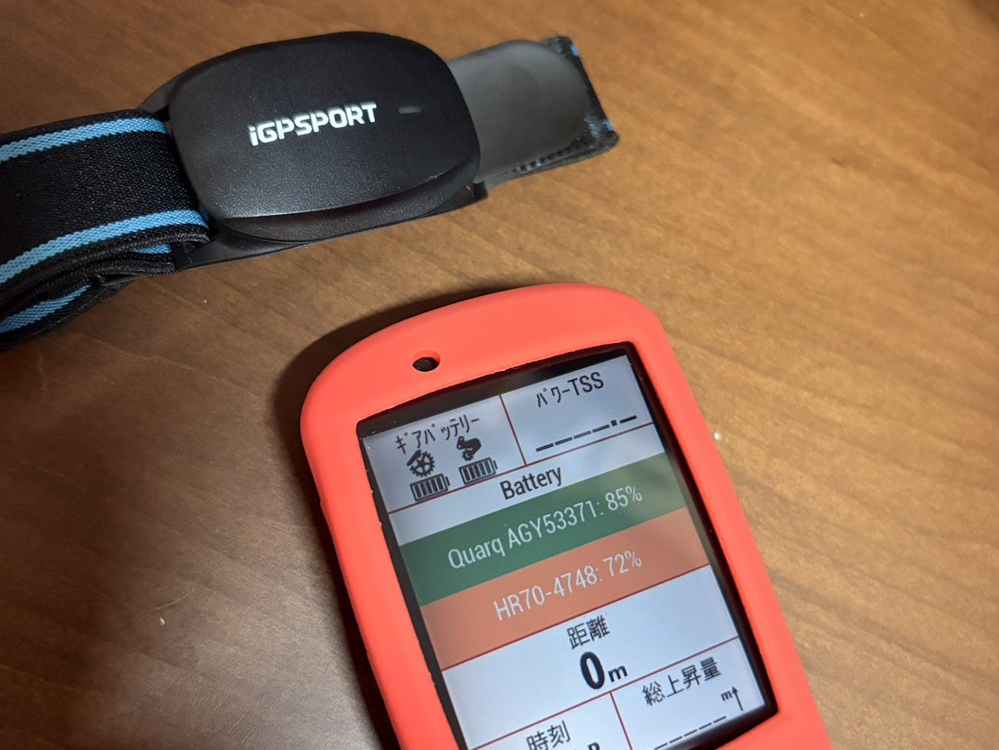
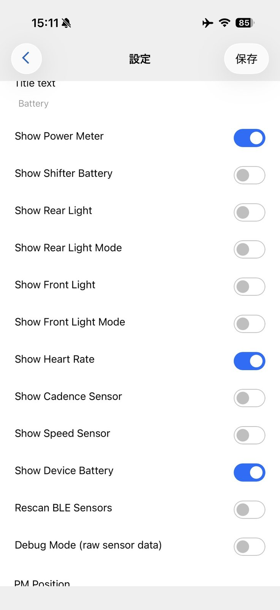
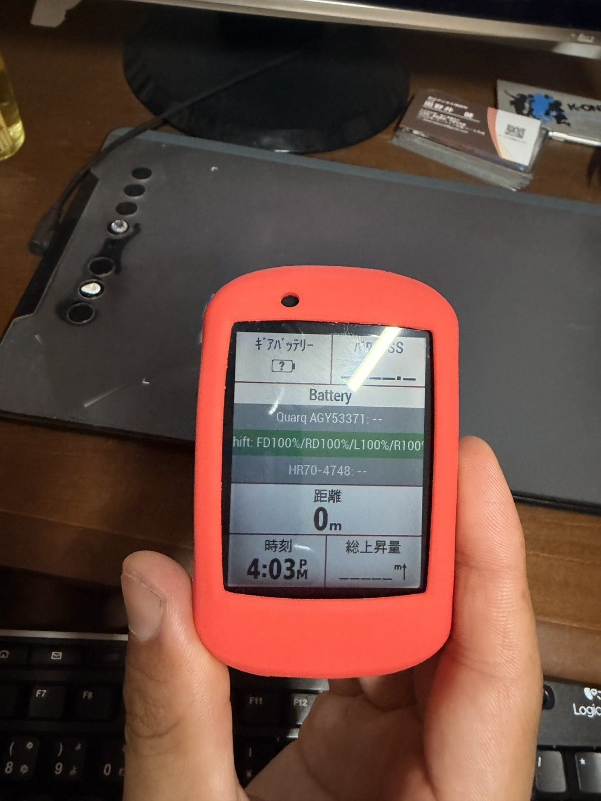

HR70のバッテリー残量をGarminに表示。Sensor Batteryを使ってみた
iGPSPORTの腕バンド式心拍計、HR70を使い始めてから心拍データを見るのがかなり楽しくなった。胸ベルト式の心拍計が苦手だった私でも、腕に巻くだけなら続けられる。
ただ、ひとつ気になっていた。バッテリー残量である。HR70は電池持ちが長いからこそ、逆に「今どれくらい残っているのか」が分からないと少し不安になる。

HR70の残量が見えない問題
HR70はバッテリー持ちが長い。仕様上は最大約65時間使えるようなので、毎回充電しなくても普通に使える。ただ、長く使えるからこそ、残量が見えないと充電タイミングが分からない。
電池が少なくなると本体のランプや振動で知らせてくれるらしい。でもライド中に腕のランプを見る余裕はあまりない。長袖の下に隠れていることもあるし、路面の振動もある。練習中に心拍計のバッテリーが切れるのは地味に痛い。
かといって毎回なんとなく充電するのも少し嫌だった。無駄に充電してバッテリーが劣化するかもしれないし、そもそも残量が分かればそこまで気にしなくて済む。せめて目安だけでも見たい。そこでHR70のバッテリー残量をGarmin Edge 530に表示できないか試した。
標準項目では見つからなかった
最初はGarmin Edge 530の標準機能で表示できると思っていた。心拍計を接続しているのだから、どこかに「心拍計バッテリー」や「センサーバッテリー」のような項目があるはず。そう思ってデータ項目やセンサー情報画面を探した。
でも見つからない。AIにも聞きながら探したが、途中で「その他の中にあるはず」みたいな話になり、実際にEdge 530を触ると出てこない。AIと喧嘩するブログとしては、かなりいつもの流れである。
この時点で、少なくとも私の環境ではEdge 530の標準項目だけでHR70の残量を常時表示するのは難しそうだと分かった。そこで出てきたのが、Connect IQの「Sensor Battery」だった。
Connect IQとSensor Battery
Connect IQは、Garminに後から機能を追加できるアプリストアのようなもの。スマホでいうApp StoreやGoogle Playに近いイメージで、Garmin本体にアプリ、ウィジェット、データ項目などを追加できる。
今回使ったSensor Batteryは、Connect IQから追加するデータ項目。スマホアプリとして走行中に動くものではなく、Edge 530本体に入れてデータ画面で表示するタイプだった。ここを最初に勘違いしかけた。
つまり、一度Edge 530にSensor Batteryを入れてしまえば、走行中はHR70とEdge 530が直接通信して残量を表示してくれる。スマホを家に忘れても表示される。これはかなり安心したポイントだった。
インストール手順
私の環境では、おおまかな流れは次の通りだった。細かい画面名は機種やアプリのバージョンで変わる可能性があるので、ここは「だいたいこういう流れ」として見てほしい。
- スマホにConnect IQ Storeアプリを入れる。
- Garminアカウントでログインする。
- 使用デバイスがEdge 530になっているか確認する。
- 検索で「Sensor Battery」を探す。
- Sensor Batteryをインストールする。
- Garmin ConnectアプリでEdge 530と同期する。
- Edge 530側のデータ画面編集で、Connect IQ項目としてSensor Batteryを追加する。
- Sensor Batteryの設定で「Show Heart Rate」をオンにする。
- 保存する。
私が少し詰まったのは「インストール待機中」のところだった。Connect IQ Storeでインストールを押しただけでは進まず、Garmin Connectアプリを開いてEdge 530を同期したら進んだ。同じところで止まったら、まずGarmin Connectで同期してみるのが良さそうだ。
Show Heart Rateをオンにする
Sensor Batteryの設定画面を見ると、いろいろなセンサーのバッテリー表示に対応しているようだった。今回重要なのは「Show Heart Rate」。これをオンにすると、心拍計のバッテリー残量が表示対象になる。

設定画面には、Heart Rate以外にもいくつかの表示スイッチがあった。ざっくり役割を書くと、こういう理解でよさそうだった。
- Show Heart Rate：心拍計のバッテリー残量を表示する。今回のHR70はここ。
- Show Power Meter：パワーメーターのバッテリー残量を表示する。私の画面ではQuarqがここに出た。
- Show Shifter Battery：電動変速のシフターやディレイラーの電池状態を表示する。SRAM RED AXSを確認したい場合はここ。
- Show Rear Light / Show Front Light：対応するリアライト、フロントライトの電池状態を表示する。
- Show Cadence Sensor / Show Speed Sensor：ケイデンスセンサー、スピードセンサーの電池状態を表示する。
- Show Device Battery：Garmin本体のバッテリー残量を表示する。
ただし、すべてのセンサーで必ず残量が表示されるとは限らない。センサー側がバッテリー情報を送っていること、Garmin側で正しく接続できていること、Sensor Battery側が対応していること。このあたりが関係するはずなので、この記事はあくまで私の環境での記録である。
実際に表示できた
HR70をGarmin Edge 530に接続した状態で、Sensor Batteryをデータ画面に配置したところ、HR70のバッテリー残量が表示された。実際の表示では、HR70が72%。同じ画面にQuarqのパワーメーターも表示され、こちらは85%だった。
これはかなり便利だった。練習前に画面を見れば「まだ72%あるから大丈夫」「そろそろ充電しておこう」と判断できる。心拍計の残量が分からず、なんとなく毎回充電する生活から少し解放された感じがある。
地味だけど、こういう小さい不安が減ると心拍計を使うハードルも下がる。心拍計は、つけること自体も大事だけど、ちゃんと運用できることも大事だと思う。バッテリー残量が分かるだけで、かなり安心感が違う。
再起動直後は少し待つ
Garminを一度オフにして、再度オンにしても表示されるかも試した。結果として表示はされたが、HR70のバッテリー残量が出るまで少し時間がかかった。
これは不具合というより、外部センサーのバッテリー情報が心拍数ほど高頻度では送られないことが大きそうだった。さらにEdge 530の起動直後は、GPS捕捉、センサー再接続、Connect IQデータ項目の読み込みが重なる。なので、最初は「--」のように見えて、少し待つと数字が出てくる。
実用上は、家を出る前にGarminの電源を入れておけば問題なさそう。靴を履いたりボトルを用意したりしている間に、だいたい表示される。せっかちな私にだけ少し試練がある。
SRAM REDのシフターも表示できた
追加で、現在使っているSRAM RED AXSのシフターも同期してみた。左右のシフターはCR2032のボタン電池を使っているので、これもGarmin側で見られるならかなりありがたい。

私の環境では、Sensor BatteryのBattery枠に「Shift: FD100% / RD100% / L100% / R100%」のような表示が出た。フロント、リア、左シフター、右シフターをまとめて見られる形で、これは思ったより便利だった。
一方で、上に置いていたGarmin標準の「ギアバッテリー」枠は、はてなマークのままだった。Sensor Battery側に情報がまとまっているなら、標準のギアバッテリー枠は速度やケイデンスなど別の項目に変えた方が画面はスッキリしそうだ。こういう細かい最適化、地味に楽しい。
スマホを忘れても表示される
最初に不安だったのが、スマホを忘れた場合。Connect IQやSensor Batteryという名前だけ聞くと、スマホアプリが常に動いていないと表示されないような気がする。でもこれは違った。
スマホの役割は、Sensor BatteryをGarmin本体にインストールしたり、設定を変更したりすること。一度Edge 530にSensor Batteryを入れてしまえば、走行中はEdge 530本体のデータ項目として動く。HR70のバッテリー情報も、スマホを経由するのではなくHR70とEdge 530が直接通信して表示される。
もちろん設定変更や再同期をしたい場合はスマホが必要になる。でも普段のライドで残量を見るだけなら、スマホなしでも問題なかった。ここはかなり勘違いしやすいと思う。私も最初は普通に勘違いしかけた。
Edge 530以外でも使える可能性はありそう
今回、私が実際に確認したのはGarmin Edge 530。なので一次情報としてはEdge 530での確認になる。ただ、Sensor BatteryはConnect IQのデータ項目なので、Connect IQに対応しているEdgeシリーズなら近いことができる可能性はある。
検索している人向けに書いておくと、Garmin Edge 540、Edge 830、Edge 840、Edge 1030、Edge 1040、Edge 1050あたりでも、Connect IQに対応していれば使えるかもしれない。ただし私はEdge 530でしか実機確認していない。機種、ファームウェア、センサー、接続方式によって表示可否は変わる可能性があるので、ここは参考程度に見てほしい。
今回やってみて思ったこと
今回、HR70のバッテリー残量をGarmin Edge 530に表示できるようになって、かなりスッキリした。HR70は便利だが、残量がまったく見えないと少し不安になる。Sensor Batteryを使うことで、少なくとも私の環境ではその不安をかなり減らせた。
AIに聞きながら何度か迷子になったが、最終的には解決できた。Edge 530標準機能で探しても見つからず、Connect IQに回り、インストール待機中で止まり、Garmin Connectで同期して突破する。こうして書くと小さな冒険である。だいぶ地味な冒険だけど。
心拍計の電池切れ不安が減ると、心拍データを使う生活も少し楽になる。富士ヒルに向けた練習そのものではないが、練習を続けるための環境整備としてはかなり良かった。またひとつ、AIと喧嘩しながらサイコン環境が整ってしまった。
自分用メモ
- 確認機材iGPSPORT HR70 / Garmin Edge 530
- 使用項目Connect IQのSensor Battery
- 重要設定Show Heart Rateをオン
- 追加確認Show Shifter BatteryでSRAM RED AXSのシフター表示も確認
- 表示結果HR70 72% / Quarq 85% / SRAM RED AXS 100%表示
- 詰まった点インストール待機中はGarmin Connect同期で進んだ
- 注意私のEdge 530＋HR70環境での確認。全機種・全センサーでの保証ではない。